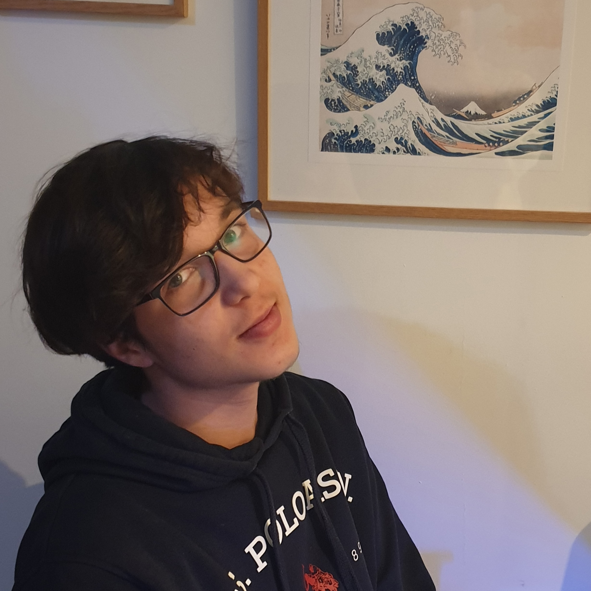
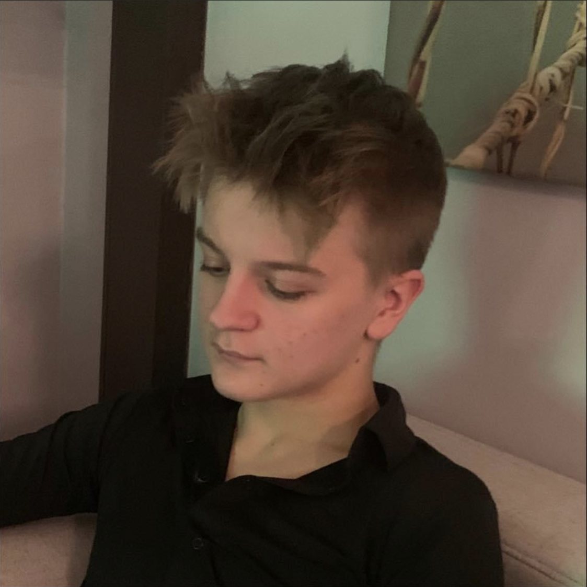

Stanisław Dębicki

Antoni Sabat
O nas
Cześć, jesteśmy uczniami technikum Łączności w Krakowie. Strona powstała w ramach szkolnego projektu o wybitnych Polakach. To co możecie oglądać w tej chwili stworzyliśmy my (patrz-góra). Miłego scrollowania :).